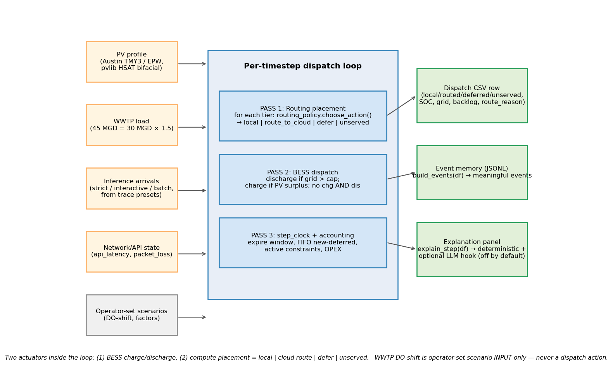
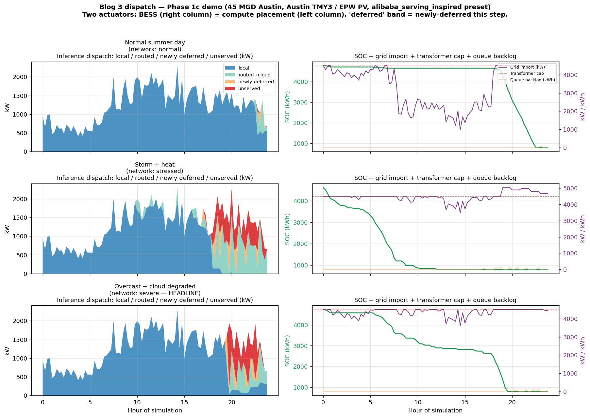
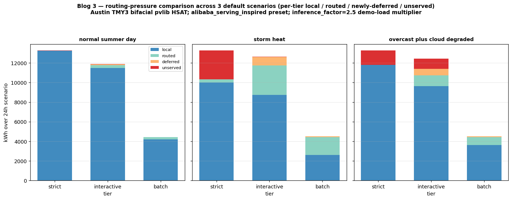
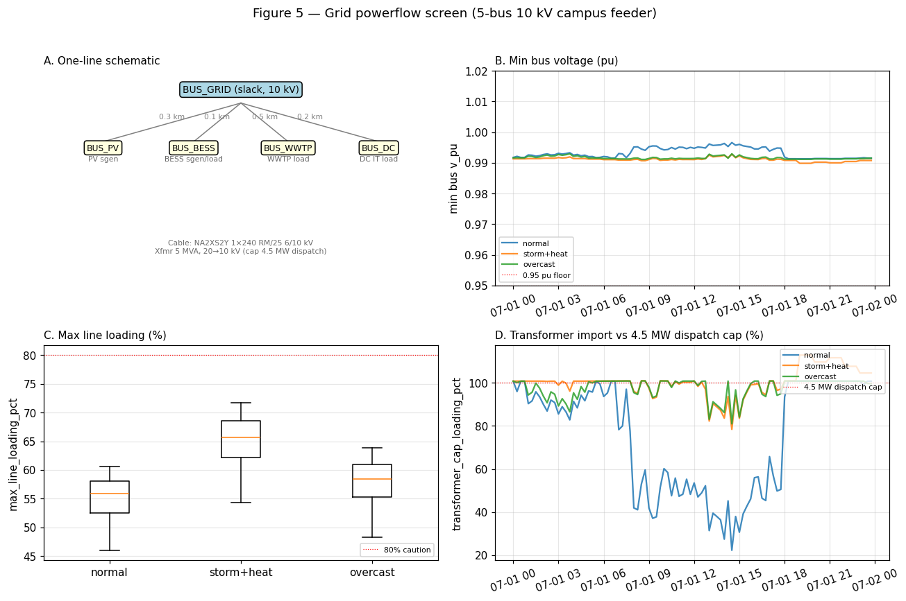
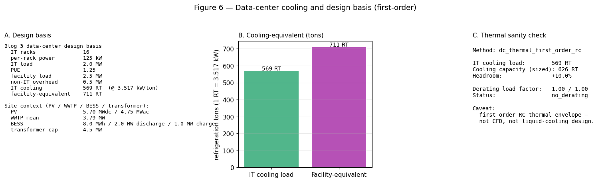
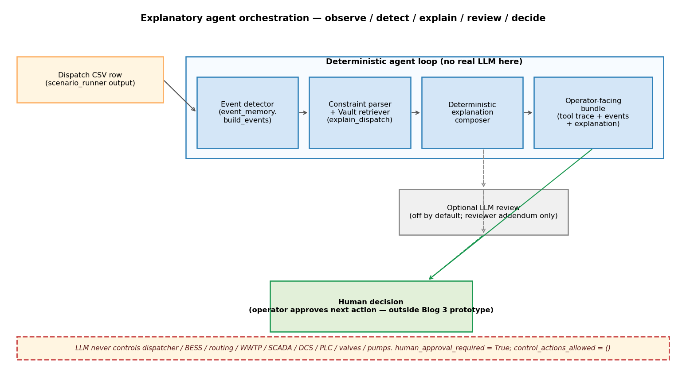
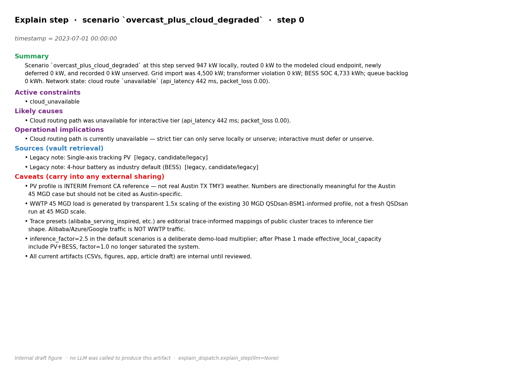

Part 3: Data-center dispatch, battery storage, and a GenAI explanation copilot at an industrial host.
Blog 2 built a GenAI-assisted design screen. But that was still a static design. This post asks the next question: once the 2 MW AI inference site looks plausible, how does it operate through a day?
Every 15 minutes, the dispatch model chooses where inference work goes: served locally, routed to a cloud or hyperscaler endpoint, queued, or unserved. It also decides whether the battery energy storage system (BESS) charges or discharges. Solar output, wastewater electric load, transformer headroom, battery state, and cloud-link quality shape those choices.
The GenAI layer moves from design copilot to operations copilot. It explains the dispatch with retrieved assumptions and constraints. It does not control the battery, routing, or wastewater plant.
| Question | Blog 2 | Blog 3 |
|---|---|---|
| Main question | Can the AI inference site be sized plausibly? | Can the designed site operate under changing conditions? |
| GenAI role | Design copilot: explains sizing assumptions | Operations copilot: explains dispatch constraints and events |
| AI workload | Rack count and facility load | Split inference work into local, cloud-routed, waiting, or unserved |
| Energy system | Solar, battery, and transformer sizing | 15-minute dispatch with solar, battery, wastewater load, and transformer headroom |
| Boundary | Feasibility screen, not a construction package | Operations validation screen, not autopilot or SCADA control |
Table 1. What changed between Blog 2 and Blog 3.
Blog 2 turned the siting thesis from Blog 1 into a GenAI-assisted design workflow: a first-pass screen for parcel area, solar nameplate, battery size, GPU rack count, and transformer headroom at one industrial host. Blog 3 starts after that design screen. It asks whether the same design still makes operational sense when solar, wastewater load, inference arrivals, cloud-route quality, and battery state all move through the day. The dispatcher has two things it can change at every step: where each AI inference job runs (locally, routed to cloud, deferred, or unserved) and whether the battery is charging or discharging.
The post is also explicit about which layer it lives at. The GPU-serving stack has its own inner loop — model runtime, continuous batching, the cluster scheduler, and the high-bandwidth fabric that connects accelerators across nodes. Blog 3 sits one layer above that. It asks what happens when a GPU-served workload lands at an industrial edge host where the binding constraints stop being kernel latency and become transformer headroom, PV variability, WWTP must-serve load, cooling envelope, cloud-route quality, and human-reviewed operations. That is the datacenter-and-edge bridge: the customer-site layer that has to be satisfied before the GPU stack inside the rack is useful at all.
At every 15-minute step the operator (and the dispatcher) is looking at six things: how much solar power the plant is producing, how much electricity the wastewater process is using, how much energy is left in the battery, how much power the existing service transformer is allowed to import from the grid, how much AI inference work is arriving, and how good the link is to the modeled cloud endpoint. Each one is simple on its own; the coupling is what makes the operating problem interesting. When solar is strong and the battery is charged, more inference can run locally without breaching the transformer cap. When solar drops, the battery empties, or the cloud link degrades, that cap suddenly binds. Table 2 records what each of the six signals is, what is real measured input vs. what is modeled, and where the model boundary stops.
| Signal | Source | What is real | What is modeled | Boundary |
|---|---|---|---|---|
| PV | Austin Mueller EPW + pvlib HSAT bifacial | Real TMY weather; pvlib physics | Plant geometry; representative 385 W module curve | Not an interconnection or shading study |
| WWTP | QSDsan/BSM1 reference + KW_PER_KLA + 1.5× | BSM1 dynamic physics at IWA reference scale | 30-MGD-equivalent energy calibration; 45 MGD scaling | Not a plant-specific process design |
| Inference arrivals | Trace-inspired presets | Public hyperscaler trace evidence | Synthetic workload generator; site demand is editorial | Not real Austin inference traffic |
| Network | Per-step API latency / packet loss | Explicit operator stress knob | Three named regimes (normal / stressed / severe) | No real fiber SLA or carrier study |
| BESS | 8 MWh / 2 MW discharge / 1 MW charge | Asymmetric design from Blog 2 | Rule-based dispatch with SOC bookkeeping | Not a transient UPS or inverter model |
| Grid & cooling | pandapower 5-bus + first-order RC | AC powerflow with realistic cable / transformer | Simplified feeder topology; analytical thermal envelope | Not protection coordination, EMT, or CFD |
Table 2. Model provenance ledger. Caveats live here so they don't have to be repeated paragraph by paragraph.
Three of the six signals — PV, WWTP, and inference arrivals — are the dynamic profiles the dispatcher consumes at every timestep. They each have a separate raw anchor, a model step that turns the raw anchor into a curve, a generated artifact, and a clearly bounded role. Table 2a records that lineage so it does not have to be reconstructed from code:
| Profile | Raw anchor | Model + artifact | Dispatch use + boundary |
|---|---|---|---|
| PV | Austin Mueller TMY3 (NREL 722540) EPW weather | pvlib HSAT bifacial5.7 MWdc / 4.75 MWac; rear-side gain via pvlib.bifacial.infinite_sheds (bifaciality 0.70, albedo 0.20). Artifact: pv_45mgd_austin_bifacial.csv + pv_profile_basis tag. |
RoleRenewable supply and local-headroom contributor. Boundary: TMY representative year, not measured plant SCADA. |
| WWTP | QSDsan/BSM1 IWA reference simulation at ~4.87 MGD | BSM1 energy-basis scalingKW_PER_KLA = 14.6 maps the reference simulation to a 30-MGD-equivalent aeration basis; the profile is then scaled 1.5× to the 45 MGD Austin worked case. Artifact: wwtp_load_45mgd_austin.csv + wwtp_profile_basis tag. |
RoleMust-serve industrial load. Boundary: energy-basis dispatch profile, not a plant-specific 45 MGD process design. |
| Inference / DC | Public hyperscaler trace evidence | Trace-derived synthetic arrivalsAggregate trace stats → named presets → 15-minute strict / interactive / batch arrivals. Artifact: arrivals generated in latency_tiers.py from a trace_calibration.py preset. |
RoleFlexible compute demand. Boundary: synthetic representative workload, not local measured traffic. |
Table 2a. Three dynamic profiles and where their provenance stops. Each artifact carries its own profile_basis string into the dispatch CSV so lineage is traceable downstream.

Figure 1. The Blog 3 operations loop: site signals enter the 15-minute step on the left, three deterministic passes run inside the loop, and the dispatch CSV, JSONL event log, and on-demand explanation panel come out on the right. WWTP DO-shift is an operator-set scenario input, never a dispatch action — the IT/OT boundary stays explicit.
Read in pseudocode, the per-timestep algorithm is:
state = (PV_kw, WWTP_kw, BESS_SOC, transformer_cap_kw, arrivals_kwh, network)
# PASS 1 — placement (compute the second actuator)
effective_local_capacity_kw =
transformer_cap_kw + PV_kw + available_BESS_discharge_kw - WWTP_kw
for tier in (strict, interactive, batch):
avail = evaluate(network.api_latency_ms, network.packet_loss, tier)
action, reason = choose_action(tier, avail, effective_local_capacity_kw)
apply(action) # local | route_to_cloud | defer | unserved
# PASS 2 — BESS (compute the first actuator)
projected_grid_import_kw = WWTP_kw + p_local_inference_kw - PV_kw
if projected_grid_import_kw > transformer_cap_kw:
discharge BESS to shave the cap (within SOC and ramp limits)
elif PV_kw > WWTP_kw + p_local_inference_kw:
charge BESS with the surplus (no simultaneous chg+dis)
# PASS 3 — clock + accounting
for queue in tiers: queue.step_clock(dt); queue.expire_if_window_passed()
emit row: per-tier kw, route_reason, SOC, grid import, backlog, OPEX
write powerflow + cooling sanity rows alongside the dispatch row
Pass 1 and Pass 2 are the only places where the dispatcher actually decides something. Pass 3 is bookkeeping plus the powerflow / cooling sanity hooks that ride alongside the dispatch row.
Treating inference as one flat 24/7 load makes the operating problem easy in the wrong way. Public traces show the real shape: bursty across the day, mixed in priority, and split into latency tiers that respond very differently when the cloud path congests. Blog 3 does not replay multi-GB hyperscaler traces; it uses them as calibration evidence for a small synthetic generator. The output is synthetic workload data, calibrated from public traces. It is not a replay of Alibaba/Azure/Google traffic and not real Austin traffic. Each 15-minute step's arrivals are produced as:
total_arrivals_kWh[t] =
facility_kw * base_utilization * inference_factor
* diurnal_shape[hour(t)]
* deterministic_lognormal_burst(seed)
* dt_hours
tier_arrivals = total_arrivals * {strict_fraction, interactive_fraction, batch_fraction}
The current code is an aggregate calibration / preset model, not a trained predictive regression. The named presets fix base_utilization, burst_factor, the per-tier fractions, and the diurnal shape; the formula above turns those scalars into a deterministic per-step arrival curve from a fixed seed. Appendix C records which trace anchors which preset and what each is used (and not used) for. The three tiers carry both a deferral window and a routing-eligibility flag.
| Tier | Deferral window | Cloud routing budget | Can route? | Can defer? | Operational meaning |
|---|---|---|---|---|---|
| strict | none | ~80 ms (normal-grade only) | Limited | No | Hard SLO; fails to unserved if no local headroom and cloud is degraded |
| interactive | 5–15 min | ~200 ms | Yes | Yes | User-facing but elastic |
| batch | 1–6 h | ~2 s | Yes | Yes | Flexible work; absorbs spillover most readily |
Table 3. Latency tiers and allowed actions. Numbers are operator-facing knobs that any deployment would replace with site-specific values during commissioning.
Blog 3 is a two-timescale abstraction. The outer loop is 15-minute energy dispatch — it decides transformer headroom, BESS charge/discharge, the local inference energy that the site serves, the inference energy that the dispatcher routes to cloud, the deferred work, and the unserved work. The inner loop — request routing, load balancing, queue management at second / request scale — is not simulated request-by-request. It is represented through trace-derived aggregate arrivals and the tier deferral windows in Table 3. The bridge between the two is the 15-minute bin: the inner router's request-level behavior is aggregated into each 15-minute step as strict / interactive / batch arrival energy and queue state.
| Layer | Typical timescale | What Blog 3 models | What Blog 3 does not model | Why 15 minutes is acceptable here |
|---|---|---|---|---|
| Request router / load balancer | milliseconds to seconds | Represented only through tiered arrivals and cloud-route eligibility | Not request-by-request scheduling, not token streaming, not per-GPU batching | Blog 3's target is energy / site dispatch, not serving-kernel design |
| Queue manager | seconds to minutes | Strict / interactive / batch deferral windows and per-tier backlog | Not a full queueing simulator (no head-of-line blocking model, no preemption semantics) | Enough to show energy-flexible work vs hard-SLO work |
| Energy dispatch | 5 to 15 minutes | Fully modeled: PV, WWTP, BESS, transformer, placement totals, OPEX feedback | Not sub-second power electronics or UPS transients | Matches the resolution needed for SOC, PV, demand, and transformer headroom decisions |
| Grid sanity check | Same as the dispatch timestep | pandapower 5-bus voltage / line-loading screen at every dispatch row | Not protection coordination, EMT, harmonics, or fault studies | Enough for a first-order campus-feeder plausibility check |
Table 3a. Two-timescale layout. 15-minute dispatch would be too slow for request-level serving control; it is appropriate for the energy operations layer because request-level activity is aggregated into the 15-minute energy and queue buckets.
Future inner loop, not in this batch: a request-level router simulator could run at 1 s / request resolution and write summarized 15-minute bins back into the same dispatch interface used here. SQLite would only become useful for storing and querying event traces at that point; it is not the reason Blog 3 stays at 15-minute resolution today.
Blog 3 is the site-level outer loop around an AI-serving cluster. It is not the cluster fabric implementation itself. Table 3b spells out which layer of the stack each piece of named technology belongs to and which layer Blog 3 actually models.
| Layer | Examples | Blog 3 status | Boundary |
|---|---|---|---|
| GPU serving inner loop | vLLM, Triton / TensorRT-LLM, NIM; continuous batching; KV cache | Not modeled; represented only as 15-min aggregate arrivals | Request-level serving and kernel / runtime optimization live inside the cluster |
| GPU cluster scheduler | Slurm, Kubernetes GPU Operator, topology-aware placement | Future integration point behind inference_profile_service |
Blog 3 does not schedule GPUs or pods |
| GPU fabric / network data plane | NCCL-style collectives, InfiniBand / RoCE, NVLink / NVSwitch, GPUDirect RDMA, DPU offload | Not implemented; acknowledged as the inner-cluster fabric | Blog 3 models the cloud-route SLO and site placement, not fabric performance |
| Site operations loop | PV, WWTP load, BESS, transformer cap, cooling sanity, local / cloud / defer / unserved placement | Implemented in this demo | First-order operations screen, not a final controller or interconnection study |
Table 3b. Blog 3 is the site-level outer loop around an AI-serving cluster, not the cluster fabric implementation itself. The first three rows name standard inner-cluster technology so the boundary is explicit; the fourth row is what this prototype actually demonstrates.
The simulation runs a deterministic rule-based dispatcher on a 15-minute timestep, three passes per step. Table 4 shows what each pass decides, what it reads, what it writes, and the guardrail that prevents the most common edge cases.
| Pass | Decision | Main inputs | Output columns | Guardrail |
|---|---|---|---|---|
| 1. Placement | local / route / defer / unserved (per tier) | Effective local headroom; tier window; network state | p_local_inference_kw, p_cloud_routed_kw, p_deferred_kw, p_unserved_kw, route_reason | Strict tier cannot defer |
| 2. BESS | charge / discharge / idle | Projected grid import after Pass 1; SOC; PV surplus | p_bess_charge_kw, p_bess_discharge_kw, soc_kwh | No simultaneous charge and discharge |
| 3. Clock + accounting | Age queues; expire; record event | Per-tier queue state; deferral windows | Backlog, expired-as-unserved, active_constraint | Expired work shows up in the same dispatch row |
Table 4. The three-pass loop. The output schema is wide so the explanation panel can quote actual columns instead of inferring them after the fact. The route_reason string draws from a closed enum of about a dozen values.
This is not MPC and not Pyomo. The two-actuator dispatch and a closed-enum reason string are the deliberate scope; a perfect-foresight optimizer is the natural baseline for a follow-up post.
Three 24-hour scenarios share the 45 MGD Austin site but stress different parts of the loop. All three use a 2.5× demo-load multiplier on inference arrivals. With the routing-headroom calculation now including PV and available BESS, a 1.0× load was no longer enough to saturate local capacity in any scenario; 2.5× is the smallest demo factor that keeps the routing trade-offs visible. Real deployments would calibrate the multiplier against site-specific arrivals.
| Scenario | PV stress | WWTP stress | Network state | What binds | Headline result |
|---|---|---|---|---|---|
| normal_summer_day | Austin July baseline | baseline | normal | Peaks only | Mostly local; occasional routing at peak hours |
| storm_heat | pv_factor 0.55 | wwtp_factor 1.18 | stressed | Transformer cap + BESS | Routes and defers more; powerflow exceeds the 4.5 MW cap |
| overcast_plus_cloud_degraded | pv_factor 0.40 | wwtp_factor 1.05 | severe | Local headroom + tight SLOs | Strict unserved rises sharply; interactive routes more even though the network is worse |
Table 5. Scenario design and headline result.

Figure 2. 24-hour operating timelines for the three scenarios. Left column: stacked inference placement (local / routed / newly-deferred / unserved). Right column: BESS SOC against grid import and the transformer cap, with per-step queue backlog overlaid.
The headline routing invariant is best read at the per-tier level. The interesting result is that under severe network on a real Austin July day, two pressures hit at once: the cloud SLO degrades and PV collapses to ~40%. Local energy headroom collapses faster than the cloud-quality gate tightens, so interactive and batch route more work to cloud — interactive's SLO budget is still wide enough to absorb the overflow. The strict tier cannot route in either scenario because of its tight cloud-SLO budget, so its unserved kWh rises sharply: it can neither route nor defer when both PV and the cloud path are bad.
| Tier | Normal routed (kWh) | Overcast routed (kWh) | Normal unserved (kWh) | Overcast unserved (kWh) | Interpretation |
|---|---|---|---|---|---|
| strict | 0 | 0 | ~20 | ~1,472 | Cannot route or defer; PV collapse → unserved |
| interactive | ~300 | ~1,115 | ~9 | ~1,045 | PV headroom collapses faster than the cloud gate tightens |
| batch | ~223 | ~810 | ~0 | ~0 | Wide SLO absorbs spillover |
| total | ~523 | ~1,925 | ~28 | ~2,517 | Routing is not monotonic in network quality |
Table 6. Per-tier 24-hour outcome, normal vs overcast+cloud-degraded. The test suite asserts these directions (rises and zeros), not exact magnitudes.

Figure 3. Per-tier 24-hour totals for local / routed / newly-deferred / unserved across the three scenarios. The shifts that Table 6 records appear here as visible band changes; energy headroom and network quality pull the dispatcher in opposite directions, and the figure makes that legible.
Routing decisions and dispatch energy totals only land if the underlying physical infrastructure can carry them. Three sanity checks ride alongside the dispatch results: a pinned design basis, a 5-bus 10 kV pandapower powerflow tied to the dispatch CSVs, and a first-order cooling envelope. None of them is a substitute for utility interconnection, protection coordination, EMT, or CFD work.
| Component | Basis | Value | Why it matters |
|---|---|---|---|
| IT load | 16 racks × 125 kW | 2.0 MW IT | Local inference ceiling |
| Facility load | PUE 1.25 | 2.5 MW | Grid + cooling basis |
| PV | HSAT bifacial via infinite_sheds | 5.7 MWdc / 4.75 MWac · 9,378 MWh/yr · peak 4,750 kW | Offsets local serve; AC-cap-bound |
| WWTP | BSM1 energy-basis × 1.5 | Mean ~3.79 MW | Must-serve host load |
| BESS | Asymmetric | 8 MWh / 2 MW discharge / 1 MW charge | Cap support and PV capture |
| Transformer cap | Dispatch assumption | 4.5 MW import | Operating boundary |
Table 7. Pinned design basis.
The pandapower model places PV, BESS, WWTP, and the data-center IT load on four MV buses connected to a slack grid bus through 0.1–0.5 km NA2XS2Y 1×240 RM/25 6/10 kV cables and a 5 MVA 20→10 kV transformer. Only p_local_inference_kw shows up as load on the DC bus — cloud-routed, deferred, and unserved work runs somewhere else, so it is not a local electrical load. BESS charge is a load and discharge is generation, with the dispatch invariant preventing both at once. The headline transformer metric here is import against the 4.5 MW dispatch cap, not the 5 MVA pandapower nameplate.
| Scenario | Min bus voltage (pu) | Max line loading | Max cap loading (4.5 MW) | Max nameplate loading (5 MVA) | Reading |
|---|---|---|---|---|---|
| normal_summer_day | 0.9913 | 60.6% | 100.8% | 91.8% | Touches the cap after line losses |
| storm_heat | 0.9898 | 71.8% | 112.8% | 102.8% | Stress-case cap exceedance |
| overcast_plus_cloud_degraded | 0.9911 | 63.8% | 100.8% | 91.8% | Cap touch + PV-headroom loss |
Table 8. Powerflow sanity metrics. Storm+heat exceeds the dispatch cap by design; the screen is meant to surface where BESS, routing, deferral, and interconnection headroom become binding.
For cooling, 2.0 MW IT corresponds to ~568 refrigeration tons (1 RT = 3.517 kW); the 2.5 MW facility-equivalent envelope is ~711 RT. A first-order analytical sanity check confirms that a typical 10% capacity headroom holds the chip-side derating factor at 1.0. The 3-node RC thermal model in dc_thermal.py stays available for transient checks but doesn't drive the headline number.

Figure 4. 5-bus 10 kV campus feeder screen. Panel A: one-line schematic. Panel B: minimum bus voltage by scenario. Panel C: max line loading distribution. Panel D: transformer import vs the 4.5 MW dispatch cap; storm+heat crosses the cap, which is the intended stress signal.

Figure 5. Pinned design basis (16 racks × 125 kW = 2.0 MW IT, PUE 1.25, 2.5 MW facility), cooling-equivalent tons (568 RT IT, 711 RT facility-equivalent at 3.517 kW/ton), and the first-order thermal sanity check.
A natural follow-up question: does the model ever hit the classic condition where PV is high, the BESS is full, the local load is not enough, and PV is curtailed? In all three shipped Austin scenarios the answer is no — the 45 MGD WWTP must-serve load plus the inference demand absorb the available PV, and the default 8 MWh BESS spends most of the day discharging rather than charging. A small deterministic sweep over pv_factor ∈ {1.0, 1.5, 2.0, 3.0} × inference_factor ∈ {1.0, 2.5} × bess_kwh ∈ {8000, 16000} against the normal_summer_day basis (blog3_curtailment_sensitivity.csv) shows where the boundary actually sits.
| pv_factor | inference_factor | BESS (kWh) | PV avail (kWh) | PV curtailed (kWh) | Curtailment % | BESS charge (kWh) | Reading |
|---|---|---|---|---|---|---|---|
| 1.0 (shipped) | 1.0 | 8,000 | 38,997 | 0 | 0.0% | 0 | WWTP+inference absorb all PV |
| 1.0 (shipped) | 2.5 (demo) | 8,000 | 38,997 | 0 | 0.0% | 0 | Heavy load; BESS only discharges |
| 1.5 | 1.0 | 8,000 | 58,496 | 95 | 0.2% | 1,654 | Marginal — BESS now starts charging |
| 2.0 | 1.0 | 8,000 | 77,994 | 11,176 | 14.3% | 3,257 | BESS-full / load-low becomes material |
| 2.0 | 1.0 | 16,000 | 77,994 | 8,303 | 10.6% | 6,130 | 2× BESS reduces but does not eliminate curtailment |
| 2.0 | 2.5 (demo) | 8,000 | 77,994 | 621 | 0.8% | 2,130 | Heavy load absorbs most of the surplus |
| 3.0 | 1.0 | 8,000 | 116,992 | 46,632 | 39.9% | 3,257 | Strong oversize; routing/storage cannot keep up |
| 3.0 | 2.5 (demo) | 16,000 | 116,992 | 17,253 | 14.7% | 8,305 | Curtailment persists even with 2× BESS and heavy load |
Table 8a. Curtailment / BESS-full sensitivity. Selected rows from blog3_curtailment_sensitivity.csv; the full sweep (pv ∈ {1.0, 1.5, 2.0, 3.0} × inf ∈ {1.0, 2.5} × BESS ∈ {8, 16} MWh) is regenerated by python -m stage1_5_wwtp_dc.operations.curtailment_sensitivity.
Reading: in the shipped Austin 45 MGD scenarios, PV curtailment is not the dominant waste mode — the WWTP must-serve load and inference demand absorb the available PV, and the BESS spends the day mostly discharging. Curtailment becomes a design question under PV oversizing (≥1.5×), low local workload, or larger BESS-full conditions; that is where a future Pyomo/MILP or MPC sizing pass belongs. Doubling BESS capacity from 8 to 16 MWh helps modestly at 2.0× PV (14.3% → 10.6%) but does not eliminate the loss; the binding constraint becomes how fast surplus can be absorbed inside the day.
The "agent" in Blog 3 is not the dispatcher. The dispatcher is the deterministic three-pass loop in §3.4 and only it controls compute placement and BESS. The agent layer sits beside the dispatch CSV and runs an explanatory orchestration loop: observe a selected dispatch row → detect events → retrieve sources → compose a deterministic explanation → optional LLM review (off by default; reviewer addendum only) → operator-facing bundle handed off to a human decision. The LLM never writes control actions. Human approval is always required.
| Step | Tool / module | Input | Output | Can affect dispatch? |
|---|---|---|---|---|
| 1. Observe row | agent_orchestration.orchestrate_explanation | Dispatch DataFrame + step index + scenario_id | Selected row + timestamp | No |
| 2. Detect events | event_memory.build_events | Dispatch DataFrame | Transformer / queue / cloud / curtailment events filtered to this timestamp | No |
| 3. Retrieve context | explain_dispatch / VaultRetriever | Row + scenario_id | Source notes with authority labels | No |
| 4. Compose deterministic explanation | explain_dispatch.explain_step(llm=None) | Row + sources + active constraints | Summary, likely causes, implications, durable caveats | No |
| 5. Optional LLM review | provided llm callable, off by default | Deterministic prompt built from steps 1–4 only | Reviewer addendum (string), recorded as llm_review | No |
| 6. Human decision | Operator workflow | Operator-facing bundle | Approved next action — only outside this prototype, after review | Only outside Blog 3, after approval |
Table 9. Agent orchestration steps. The orchestration result returned by orchestrate_explanation always carries human_approval_required = True and control_actions_allowed = (). A regression test (test_blog3_agent_orchestration.py) asserts that the LLM addendum cannot alter the deterministic explanation, event IDs, or caveats; the addendum is recorded only in llm_review.

Figure 6. Explanatory agent orchestration boundary. The deterministic loop (event detector → constraint parser + vault retriever → explanation composer → operator-facing bundle) is contained inside the inner box. The optional LLM reviewer hangs off via dashed lines and contributes a reviewer addendum only. The dashed bottom band states the invariant: the LLM never controls dispatcher / BESS / routing / WWTP / SCADA / DCS / PLC / valves / pumps.
If the boxes in Figure 6 are unfamiliar, Table 10 reads them as a short step ledger instead of a six-column code table. Each step shows what the box does, what code it maps to, and the safety boundary that keeps the agent beside the dispatcher rather than inside the control loop.
One already-computed timestep from the deterministic dispatcher. Nothing is decided here; the row is the agent layer's input.
Looks at the dispatch row and flags facts such as transformer hits, strict-tier unserved work, cloud-degraded windows, curtailment moments, or backlog peaks.
Reads active_constraint and route_reason, then retrieves the source notes that explain the relevant operator-facing context.
Assembles the operator summary, likely causes, operational implications, and durable Blog 3 caveats from the row, events, and retrieved notes.
If a reviewer LLM callable is provided, it sees only the deterministic prompt from the earlier steps and returns short reviewer notes. It is off by default; tests use fakes only.
The operator sees the tool trace, events, deterministic explanation, optional LLM addendum, and the explicit human-approval flag. Blog 3 stops here.
Table 10. Reader's guide to Figure 6. The six-column table was replaced by step cards because this material is a sequence, not a spreadsheet.
The deterministic explanation in step 4 is what the operator sees in the prototype's Streamlit panel: a one-paragraph summary of placement and energy state, the active constraints parsed from the dispatch row, likely causes built directly from the row's columns and route_reason strings, a short list of operational implications, two or three vault sources with their authority labels preserved, and the durable Blog 3 caveats appended verbatim.
The explanation runs offline. There is an optional LLM hook for incident review, but it is off by default; tests use only fakes, and the app render path never calls a real LLM API. Every claim the panel makes can be traced to a specific column on the dispatch row or a specific vault page. Alongside the panel, the prototype writes JSONL event records — build_events walks the dispatch DataFrame and emits a DispatchEvent for each meaningful occurrence (transformer violations, per-tier unserved or newly-deferred work, cloud-unavailable or cloud-degraded windows, PV curtailment, queue-backlog peaks). Event IDs are deterministic from (scenario_id, timestamp, event_type), so the log is stable across reruns. Operator notes go to a local export-excluded event log, not to any public artifact.

Figure 7. Reproducible artifact of the explanation panel for one row of the overcast+cloud-degraded scenario. Vault sources carry their authority labels (authoritative, reviewed, candidate, legacy); the durable Blog 3 caveats are always appended.
What this proves: the 45 MGD Austin worked case can be operated as a routing-centric two-actuator dispatch, the operating boundary is visible at the timestep level, and the explanation/event-memory layer stays tied to row-level evidence. The operating loop should generalize to other industrial host classes, but Blog 3 only walks one. Table 11 maps each part of the screen to what a real deployment would still owe.
| Area | Blog 3 does | Real deployment still needs |
|---|---|---|
| WWTP process | BSM1-informed energy-basis profile, 1.5×-scaled to 45 MGD | BioWin / GPS-X / SUMO or a calibrated plant-specific QSDsan model |
| Network | Three named latency / loss regimes | Real fiber route, SLA contract, H2S- and air-quality-aware siting |
| Grid | 5-bus pandapower sanity feeder | Utility interconnection, protection coordination, arc-flash, EMT / transient analysis |
| Power electronics | 15-minute BESS dispatch (energy / demand) | UPS sizing and rack-level transient validation |
| IT/OT | Compute placement + BESS dispatch only | Explicit cyber boundary; never WWTP SCADA / DCS / PLC / valves / pumps |
| Cooling | First-order RT envelope and RC thermal model | Mechanical design, airflow / liquid-cooling layout, redundancy |
Table 11. Deployment boundary. Blog 3 is a screen, not a final design; the right column is what a project budget and schedule would still cover.
The deployment-grade endpoint choice for any GenAI explanation layer is the same as in Blog 2: NVIDIA NIM, an enterprise endpoint, or a local LLM behind the firewall, depending on security requirements. The default in the prototype is no LLM at all.
At each 15-minute step the dispatcher computes the local site's effective inference capacity in kW as:
available_bess_discharge_kw = min(
bess.p_max_discharge_kw,
max(0, soc_kwh - soc_min_kwh) * eta_one_way / dt_h
)
effective_local_capacity_kw = max(0,
transformer.grid_import_cap_kw
+ p_pv_kw
+ available_bess_discharge_kw
- p_wwtp_kw
)
An earlier version used only transformer_cap - p_wwtp, which made routing too conservative and zeroed-out routing in every scenario. With PV and available BESS in the headroom, the dispatcher correctly serves more locally during sunny hours and during high-SOC hours.
For each tier, the policy first asks whether the cloud route is currently available, degraded, or unavailable:
def evaluate(api_latency_ms, packet_loss, tier_config, routing_config):
if packet_loss > routing_config.packet_loss_route_block:
return UNAVAILABLE
if api_latency_ms > tier_config.cloud_latency_budget_ms:
return UNAVAILABLE
if api_latency_ms > routing_config.cloud_normal_max_ms:
return DEGRADED
return AVAILABLE
For each unit of arriving (or already-queued) work, the dispatcher then picks an action and emits a route_reason string drawn from a closed enum. Strict tier never defers; interactive and batch tiers also consider deferral within their windows.
[soc_min, soc_max].route_reason values are drawn from a closed enum and are deterministic from a fixed scenario seed.Blog 3 ships under stage1_5_wwtp_dc/operations/ with a thin Streamlit app under stage1_5_wwtp_dc/apps/blog3_ops_app.py. Each module has a narrow responsibility:
| Module | Responsibility |
|---|---|
blog3_config.py | Typed dataclasses (Site, BESS, Transformer, LatencyTier, Routing, Scenario, OPEX). Default site is 45 MGD Austin. |
trace_calibration.py | Six named presets that turn public-trace evidence into per-tier fractions, burst factors, and diurnal shape. Live calibration reads extracted v2026-GenAI CSVs only after a safety check. |
latency_tiers.py | Per-tier work queues with deferral window, queue age, served / routed / deferred / expired bookkeeping. |
routing_policy.py | The placement decision: evaluate() returns availability per tier; choose_action() returns local | route_to_cloud | defer | unserved plus a route_reason from a closed enum. |
dispatch_interface.py | Lightweight Dispatcher protocol so a future LP / MILP / MPC dispatcher can slot in without rewriting the scenario runner. |
dispatch_rules.py | The RuleBasedDispatcher. Three-pass loop: routing placement → BESS dispatch → step_clock + accounting. |
site_timeseries.py | Builds the per-step DataFrame from cached PV + WWTP profiles and the network-scenario series. |
scenario_runner.py | Runs a named scenario end-to-end; uses cached CSV when overrides are empty; reruns under live v2026 calibration otherwise. |
build_phase1_profiles.py | Source-controlled regeneration of the three 45 MGD Austin profile CSVs. |
grid_powerflow.py | 5-bus 10 kV pandapower screen tied to the dispatch CSVs; per-timestep voltage / line loading / cap / nameplate metrics. |
cooling_design_basis.py | Pinned design basis (16 racks × 125 kW, PUE 1.25, 568 RT cooling) and first-order thermal sanity check. |
figures.py | Source-controlled regeneration of the six internal-draft figures and a top-level helper that runs profiles → scenarios → powerflow → figures end-to-end. |
event_memory.py | DispatchEvent with deterministic IDs; build_events(df) filters meaningful events; JSONL round-trip. |
explain_dispatch.py | explain_step() returns a structured DispatchExplanation; deterministic offline by default; optional LLM hook off by default; vault retrieval through VaultRetriever with authority labels preserved. |
agent_orchestration.py | Coordinates event detection, deterministic explanation composition, and the optional LLM reviewer hook. Returns an AgentOrchestrationResult with a deterministic tool trace, the row's events, the explanation, and the explicit human_approval_required = True / control_actions_allowed = () invariants. Does not control dispatch. |
app_data.py | Pure-data helpers for the Streamlit module: scenario-aware override diffing, summary metrics, profile-basis warnings, comparison tables, live-calibration availability. |
curtailment_sensitivity.py | Deterministic pv_factor × inference_factor × bess_capacity sweep against the normal_summer_day basis; writes blog3_curtailment_sensitivity.csv. Driver for §3.6.1. |
profile_services/ | Thin documentary facades (pv_profile_service, wwtp_profile_service, inference_profile_service) that point at the working code and expose the weighted-ensemble interface. Not load-bearing yet; see §B.1. |
apps/blog3_ops_app.py | Internal Streamlit operator screen. |
Generated CSVs and figures are gitignored derived artifacts; the durable source is the regen helper code. python -m stage1_5_wwtp_dc.operations.figures regenerates everything end-to-end.
Why stage1_5_wwtp_dc/? The package name is historical project naming from Blog 2 / Stage 1.5. Blog 3 currently lives there because it reuses the WWTP / PV / DC sizing code, data paths, tests, and app conventions that were already in place. For an open-source cleanup, the profile_services/ scaffold (§B.1) already separates PV, WWTP, and inference profile boundaries; a future repo cleanup can promote Blog 3 code to a clearer package name such as energyflux_ops/ or blog3_ops/, but moving now would be noisy churn and is not needed for the article candidate.
Blog 3 ships as one Python package today; a future open-source / microservice split would carve the package along three profile services plus a dispatch engine and two sanity services. The mapping is documented in a thin facade layer at stage1_5_wwtp_dc/operations/profile_services/ (pv_profile_service.py, wwtp_profile_service.py, inference_profile_service.py) — the dispatch loop and tests still import the underlying modules directly, so the facade is additive, not load-bearing yet:
| Service | Current code home | Facade module |
|---|---|---|
| PV profile service | models/pv_generator.py + operations/site_timeseries.py + operations/build_phase1_profiles.py | profile_services/pv_profile_service.py |
| WWTP profile service | models/wwtp_load_generator.py + data/wwtp_load_*.csv | profile_services/wwtp_profile_service.py |
| Inference profile service | operations/trace_calibration.py + operations/latency_tiers.py | profile_services/inference_profile_service.py (also exposes the weighted-ensemble interface) |
| Dispatch engine | operations/dispatch_rules.py + operations/routing_policy.py + operations/dispatch_interface.py | Direct imports (no facade — this is the load-bearing core) |
| Grid sanity service | operations/grid_powerflow.py | Direct (sanity-side, no facade needed) |
| Thermal sanity service | operations/cooling_design_basis.py + models/dc_thermal.py | Direct |
| Explanation / event service | operations/explain_dispatch.py + operations/event_memory.py | Direct |
Table B.1. Where each part of Blog 3 lives today and which clean seam an open-source pass would split along. Files are not moved in this pass; the seam is documentary.
The inference profile service row is also the natural seam where a future production GPU serving stack would plug in: a Slurm or Kubernetes GPU-operator scheduler, topology-aware placement, and a runtime such as vLLM, Triton / TensorRT-LLM, or NIM. In Blog 3 this seam receives only trace-derived 15-minute arrivals; it does not run a GPU scheduler and does not model NCCL / InfiniBand / RDMA behavior. The reason the boundary is named here is that an industrial host project usually fails between this seam and the rest of the site (utility, process, cooling, IT/OT) — naming the seam is what lets the two sides be designed against each other instead of being pretended away.
Blog 3 uses public hyperscaler cluster traces as calibration evidence, not as a claim that hyperscaler traffic is WWTP traffic. The output is synthetic workload data, calibrated from public traces. It is not a replay of Alibaba/Azure/Google traffic and not real Austin traffic. Table C.1 records which file anchors which preset, which statistic is consumed, what dispatch field it feeds, and what each is and is not used for.
qps.tar.gz / qps.csvObserved signal: serving QPS shape. Statistic used: mean, p95/mean burst, normalized daily shape (when live extraction is enabled).
Boundary: not replayed request-by-request.
queue_size_raw_anon.tar.gz + queue_rt_raw_anon.tar.gzObserved signal: queue depth and queue response time. Statistic used: p50 / p95 response-time anchor.
Boundary: article uses fixed tier config, not a full queueing-model fit.
pipeline_inference_data_anon.tar.gzObserved signal: serving / pipeline latency. Statistic used: p50 / p95 latency anchor.
Boundary: not mapped to a specific model endpoint.
pod_gpu_duty_cycle_anon.tar.gzObserved signal: GPU duty / utilization. Statistic used: mean / p95 duty cycle.
Boundary: not a local GPU utilization guarantee.
disaggregated_DLRM_trace.csvObserved signal: latency-sensitive serving instances. Statistic used: instance counts; serving-anchor evidence.
Boundary: DLRM serving is not GenAI image/text serving.
Observed signal: training, warehouse-scale burstiness, cloud-serving contrast. Statistic used: qualitative or preset-level anchor.
Boundary: not the default Austin run unless selected.
Table C.1. Trace calibration ledger. The Aegaeon paper is cited as scheduler-concept evidence that production GPU serving over-provisions, not as an input dataset. The v2026-GenAI files are gzipped tarballs whose CSV members are extracted into a gitignored directory before the calibration code reads them; runtime checks confirm the directory is both present and ignored.
A fair question: if other researchers already use Alibaba / Google / Philly traces to generate synthetic workloads, why not directly call their open-source code? Short answer: the available open-source artifacts are useful as methodological evidence, but none of them produces the per-timestep inference-energy arrival curve that Blog 3 needs as a dispatch input. Table C.2 records that audit so the choice is explicit rather than implicit.
Open-source status: public trace data + schemas + processing / visualization scripts.
What it generates: trace records and aggregate stats — not a per-timestep inference-arrival generator.
Why not directly adopted: repo is data + viewers, not a plug-and-play inference-arrival generator for behind-the-meter dispatch.
Open-source status: published method; reference C / Python building blocks.
What it generates: Alibaba batch-task CPU/memory workloads reconstructed via heuristic block assembly.
Why not directly adopted: targets batch CPU/memory, not 15-min inference-energy arrivals; running its C blocks inside Blog 3 tests is too heavy for this pass.
Open-source status: public trace data + analysis.
What it generates: DNN-training trace; useful for GPU cluster scheduling and batch-deferral evidence.
Why not directly adopted: training trace, not an inference-traffic generator; embedded as the batch-tier deferral anchor only.
Open-source status: public trace + research simulators.
What it generates: cluster scheduling / resource-allocation studies.
Why not directly adopted: scheduler / resource simulator, not a per-timestep power-dispatch interface.
Open-source status: public dataset + research papers.
What it generates: cloud-serving traffic shape evidence (LLM / MM).
Why not directly adopted: inspires the azure_llm_inference_inspired preset; no installable adapter produces a per-timestep arrival curve for behind-the-meter dispatch.
Table C.2. External workload-generator audit. None of these candidates is currently a direct adapter; all are methodological references behind the in-repo presets. If a future package becomes a plug-and-play per-timestep inference-arrival generator for behind-the-meter use, it slots in through the weighted-ensemble interface in C.2 below.
The right design here is not "ours vs external" but a weighted ensemble: the dispatch loop reads an arrival curve that may be a single in-repo preset (today's default) or a weighted sum of normalized contributions. The interface is exposed at stage1_5_wwtp_dc/operations/profile_services/inference_profile_service.py:
arrival_curve = w_in * preset_in_curve
+ w_external_1 * external_generator_curve_1
+ w_external_2 * external_generator_curve_2
@dataclass(frozen=True)
class WorkloadCurveSource:
name: str
source_type: Literal["internal_preset", "external_adapter"]
weight: float # weights sum to 1.0 across sources
provenance: str # license / source / version
preset_name: TraceCalibrationName | None = None
adapter: Callable | None = None
def generate_weighted_arrivals(
sources: Sequence[WorkloadCurveSource],
*,
total_dc_kw: float, hours: int, dt_minutes: int,
seed: int, inference_factor: float,
) -> dict[TierName, np.ndarray]: ...
Design rules baked into the interface: external adapters must declare license / source / provenance; each adapter must return strict / interactive / batch arrivals or a total arrival curve plus a documented tier-split mapping; curves are normalized to the same total 24-hour inference energy before weighting so one source does not dominate just because of scale; weights are user-facing scenario knobs, not hidden constants; the default Blog 3 sources list is a single-source ensemble with preset_in = 1.0 until an external adapter is verified and tests pass.
Concretely, the default sources list is:
sources = [
WorkloadCurveSource(
name="alibaba_serving_inspired",
source_type="internal_preset",
weight=1.0,
provenance="trace_calibration.py aggregate preset",
preset_name="alibaba_serving_inspired",
),
]
The single-source path in generate_weighted_arrivals is byte-equivalent to the legacy latency_tiers.generate_tier_arrivals call; a regression test asserts that. External adapters can be added behind a guarded import + a skipped test when their package or data is unavailable, without touching the dispatch loop. No external adapter is wired up in this batch.
Blog 2 prose used a 45 MGD WWTP outside Austin TX. The Blog 2 demo code was anchored on a 30 MGD QSDsan-BSM1-informed WWTP profile and a Fremont CA pvlib PV profile. Blog 3 closes that gap: PV is now generated from real Austin TX TMY3 weather (NREL station 722540 Austin Mueller Municipal Airport, EnergyPlus EPW format) on the same 5.7 MWdc / 4.75 MWac HSAT basis used in Blog 1 and Blog 2, with rear-side bifacial gain modeled through pvlib.bifacial.infinite_sheds; WWTP is derived from the BSM1 reference dynamic simulation, mapped through a 30-MGD-equivalent aeration-energy calibration, then scaled 1.5× to the 45 MGD Austin worked case (mean ≈ 3,790 kW, matching the Blog 2 prose "3,750 kW WWTP baseline" within ~1%) plus a same-shape DO-shifted variant for the operator-partnership scenario. Every dispatch CSV row carries pv_profile_basis (austin_tx_tmy3_pvlib_5700kwp_hsat_bifacial_infinite_sheds_bifaciality70_albedo20), wwtp_profile_basis (30mgd_qsdsan_bsm1_x1.5), and trace_preset so the lineage is traceable.
The dispatch profile is built from the QSDsan/BSM1 dynamic reference simulation at its native ~4.87 MGD reference flow (the IWA Benchmark Simulation Model No. 1 — 18,446 m³/d influent, canonical 1,000 / 1,333 m³ reactor volumes), with a per-unit aeration-energy constant KW_PER_KLA = 14.6 calibrated so blower power lands at a ~1,750 kW baseline that represents a 30-MGD-equivalent activated-sludge plant. The hourly profile is then linearly scaled 1.5× to the 45 MGD Austin worked case. The "30 MGD" label is a calibration choice on top of the BSM1 reference simulation; the simulator is not run at 30 MGD scale directly. This boundary is explicitly accepted as a dispatch-demo basis (2026-05-04); a plant-specific 45 MGD deployment would still require recalibration or a third-party process model.
The inference_factor=2.5 demo multiplier is recorded here because it is the kind of editorial choice that should not be silent. After the routing policy began computing effective_local_capacity = transformer + PV + available_BESS - WWTP (replacing a too-conservative earlier formulation), a 1.0× load no longer saturated any of the three default scenarios — routing dropped to zero, deferral dropped to zero, and the headline scenario stopped differing from normal. 2.5× is the smallest demo multiplier that keeps the routing trade-offs visible. A real deployment would calibrate the multiplier against site-specific arrival rates rather than carry this demo number.
Blog 2 stopped at "the screen says the site is plausible." Blog 3 walks the next step: the operating boundary moves with PV, BESS, network state, and tier mix, and the most useful job for a GenAI layer here is to explain that boundary in terms the operator can audit. The article and the prototype both stop short of a controller.
The wedge this demo is meant to illustrate is not low-level GPU networking. It is the adjacent skill an industrial AI infrastructure project actually needs: turning a GPU-served GenAI workload into the site constraints that utility, facilities, process, IT, and AI teams can all inspect together. That translation is where most behind-the-meter inference projects get stuck, and it is the layer this prototype lives at.